◆「影之國的舞鬥會Pick Up召喚(每日交替)」期間◆
期間:2020年9月18日(五) 17:00～10月2日(五) 11:59
舉辦期間限定「影之國的舞鬥會Pick Up召喚(每日交替)」！
從期間限定活動「影之國的舞鬥會 ～貓咪與兔子與聖杯戰爭～」關聯的從者之中，下述的期間限定從者常駐Pick Up！ ・★5(SSR)斯卡哈(Lancer)
另外，下述的從者以每日交替Pick Up！ ・★4(SR)迪爾姆德・奧德利暗(Saber) ・★4(SR)芬恩・麥克庫爾 ・★4(SR)玉藻貓
並且，下述的期間限定概念禮裝常駐Pick Up！ ・★5(SSR)真紅の教槍 ・★4(SR)ヘルズキッチン ・★3(R)青き空の学び舎 裝備上述3種概念禮裝的話，在期間限定活動期間限定活動「影之國的舞鬥會 ～貓咪與兔子與聖杯戰爭～」中會提升活動道具的掉落獲得數。
Pick Up期間中，Pick Up對象從者與概念禮裝的出現機率提升！
詳情請在聖晶石召喚畫面左下的召喚詳細確認。
11次召喚中確定1張★4(SR)以上和確定1位★3(R)以上的從者！ ※確定★4(SR)以上包含從者和概念禮裝。 ※本頁面皆為開發中圖片。會有與實際圖片相異的情況。
◆有關從者的注意◆
※下述的從者在Pick Up期間結束後不會追加到故事召喚。
・★5(SSR)斯卡哈(Lancer)
※下述的從者在Pick Up期間結束後仍會在故事召喚被抽出。
・★4(SR)迪爾姆德・奧德利暗(Saber)
・★4(SR)芬恩・麥克庫爾
・★4(SR)玉藻貓
◆有關概念禮裝的注意◆
※下述的概念禮裝，Pick Up期間中也能靠友情點數召喚獲得。
・★3(R)青き空の学び舎
※請注意在自動變還設定登錄★3(R)概念禮裝的情況，下述的概念禮裝會是自動變還的對象。
・★3(R)青き空の学び舎
◆「影之國的舞鬥會Pick Up召喚(每日交替)」Pick Up內容◆
| Pick Up期間 | Pick Up內容 | |
|---|---|---|
| 全天Pick Up | 每日交替Pick Up | |
| 9/18(五) 17:00～ 9/19(六) 22:59 |
★5 斯卡哈(Lancer) | ★4 迪爾姆德・奧德利暗(Saber) ★4 芬恩・麥克庫爾 ★4 玉藻貓 |
| 9/19(六) 23:00～9/20(日) 22:59 | ★4 玉藻貓 | |
| 9/20(日) 23:00～9/21(一) 22:59 | ★4 迪爾姆德・奧德利暗(Saber) | |
| 9/21(一) 23:00～9/22(二) 22:59 | ★4 芬恩・麥克庫爾 | |
| 9/22(二) 23:00～ 9/24(四) 22:59 |
★4 迪爾姆德・奧德利暗(Saber) ★4 芬恩・麥克庫爾 ★4 玉藻貓 |
|
| 9/24(四) 23:00～ 9/26(六) 22:59 |
★4 玉藻貓 | |
| 9/26(六) 23:00～ 9/28(一) 22:59 |
★4 迪爾姆德・奧德利暗(Saber) | |
| 9/28(一) 23:00～ 9/30(三) 22:59 |
★4 芬恩・麥克庫爾 | |
| 9/30(三) 23:00～ 10/2(五) 11:59 |
★4 迪爾姆德・奧德利暗(Saber) ★4 芬恩・麥克庫爾 ★4 玉藻貓 |
|
※請注意會以每日交替變更Pick Up的從者。
 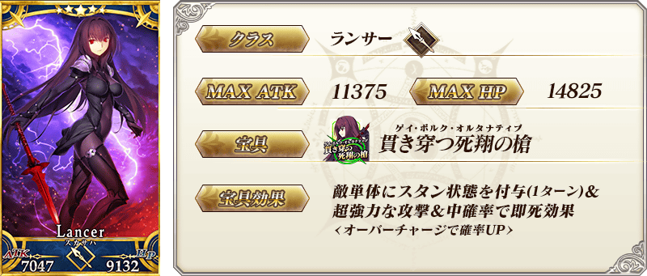
※上述「★5(SSR)斯卡哈(Lancer)」的卡面為靈基再臨第2階段。
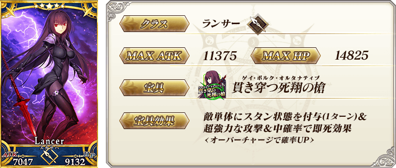
※上述「★5(SSR)斯卡哈(Lancer)」的卡面為靈基再臨第2階段。
 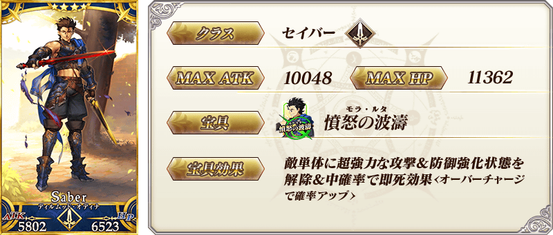
※上述「★4(SR)迪爾姆德・奧德利暗(Saber)」的卡面為靈基再臨第2階段。
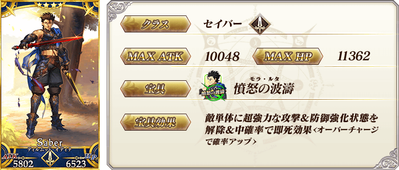
※上述「★4(SR)迪爾姆德・奧德利暗(Saber)」的卡面為靈基再臨第2階段。

 ※上述「★4(SR)芬恩・麥克庫爾」的卡面為靈基再臨第2階段。
※上述「★4(SR)芬恩・麥克庫爾」的卡面為靈基再臨第2階段。
 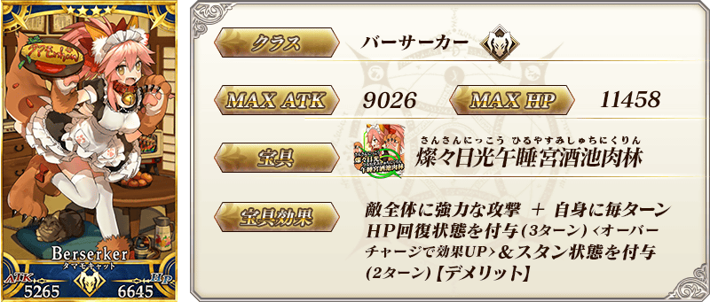
※上述「★4(SR)玉藻貓」的卡面為靈基再臨第2階段。
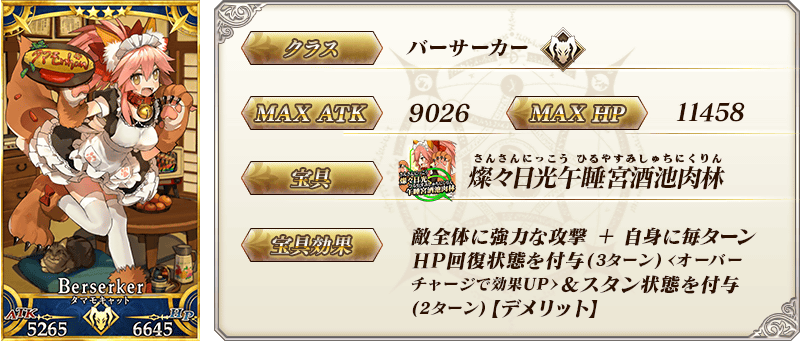
※上述「★4(SR)玉藻貓」的卡面為靈基再臨第2階段。
| 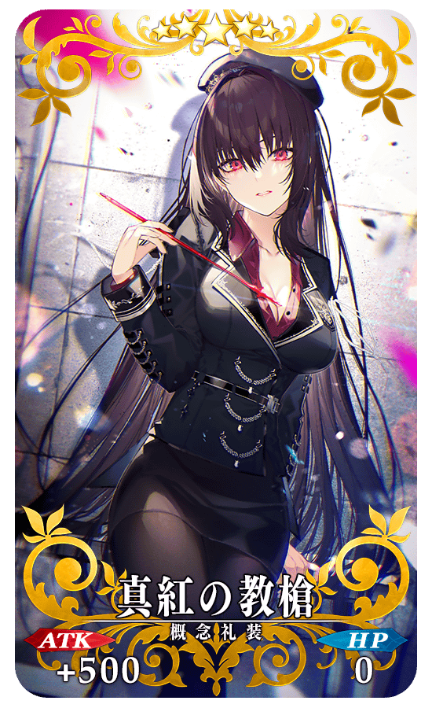 |
★★★★★SSR |
| 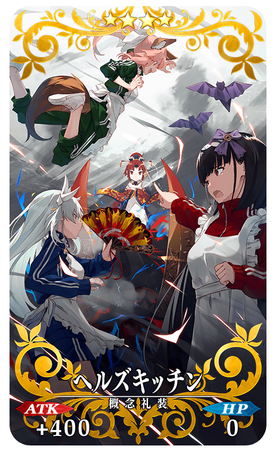 |
★★★★SR |
| 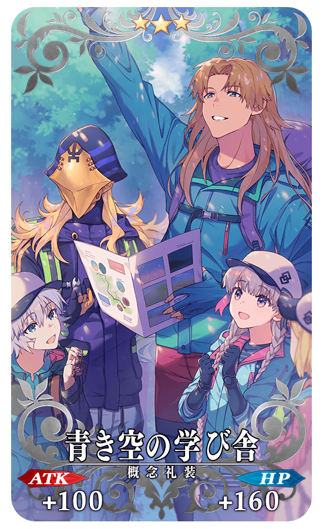 |
★★★R |
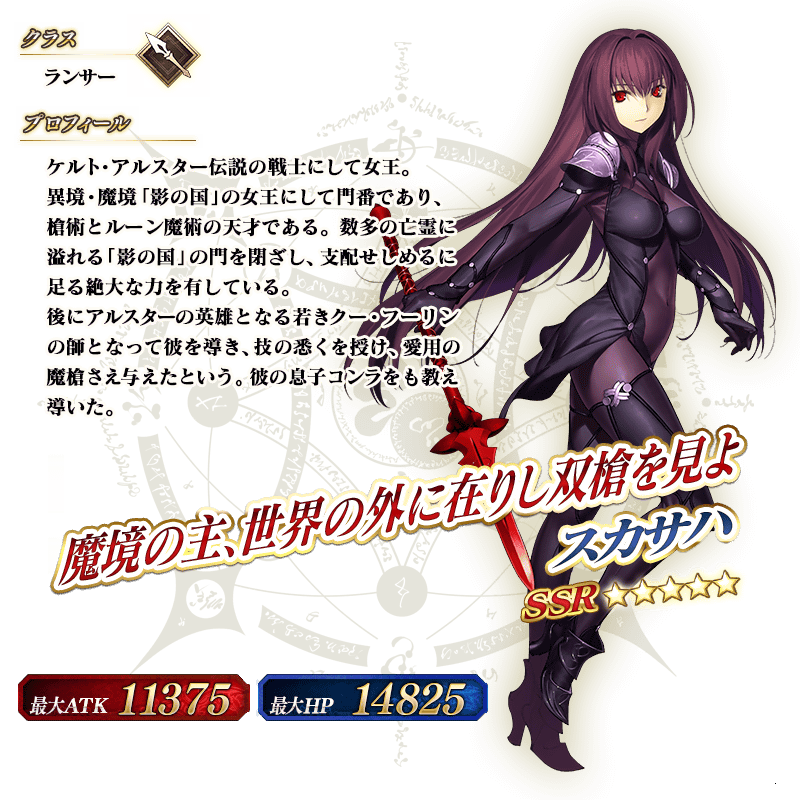 ※上述「★5(SSR)斯卡哈(Lancer)」的立繪為靈基再臨第2階段。
「★5(SSR)斯卡哈(Lancer)」的靈衣開放權做為期間限定活動「影之國的舞鬥會 ～貓咪與兔子與聖杯戰爭～」的報酬登場！
可在本活動的活動道具交換入手上述靈衣開放權。
另外，想靈衣開放的話，除了靈衣開放權外再加上必須滿足一些開放條件。
◆有關靈衣開放權的注意◆
※「★5(SSR)斯卡哈(Lancer)」的靈衣開放權只限期間限定活動「影之國的舞鬥會 ～貓咪與兔子與聖杯戰爭～」的活動道具交換期間才能入手。
※「★5(SSR)斯卡哈(Lancer)」的靈衣會配合外觀變化一部份語音。
※請注意未持有「★5(SSR)斯卡哈(Lancer)」的情況，可入手靈衣開放權。但無法進行靈衣開放。


「靈衣開放」是自強化畫面進行。
※「靈衣開放」後會自動切換戰鬥角色和圖示。若想回到「靈衣開放」前的狀態和變成其他再臨階段的情況，可自從者詳細畫面變更。 ※進行「靈衣開放」不會讓職階和能力等有所變化。
介紹開放靈衣「刺し穿つバニー」的「★5(SSR)斯卡哈(Lancer)」寶具演出！
在「Fate/Grand Order」官方網站內的公告中，以影片公開寶具演出，敬請確認。
「★5(SSR)斯卡哈(Lancer)」的戰鬥動作及寶具演出翻新！
在「Fate/Grand Order」官方網站內的公告中，以影片公開寶具演出，敬請確認。
◆翻新實施時間◆
2020年9月18日(五) 17:00～
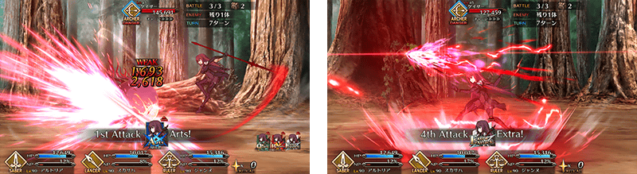

介紹在本召喚Pick Up的3位從者寶具演出！
在「Fate/Grand Order」官方網站內的公告中，以影片公開寶具演出，敬請確認。
【★4(SR)迪爾姆德・奧德利暗(Saber)】
【★4(SR)芬恩・麥克庫爾】
【★4(SR)玉藻貓】
其他還有，期間限定活動「影之國的舞鬥會 ～貓咪與兔子與聖杯戰爭～」同時舉辦！
關於詳情，請自下述橫幅確認。
■「影之國的舞鬥會 ～貓咪與兔子與聖杯戰爭～」詳細情報 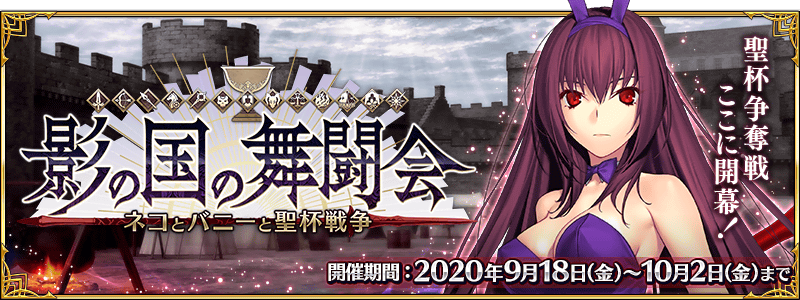